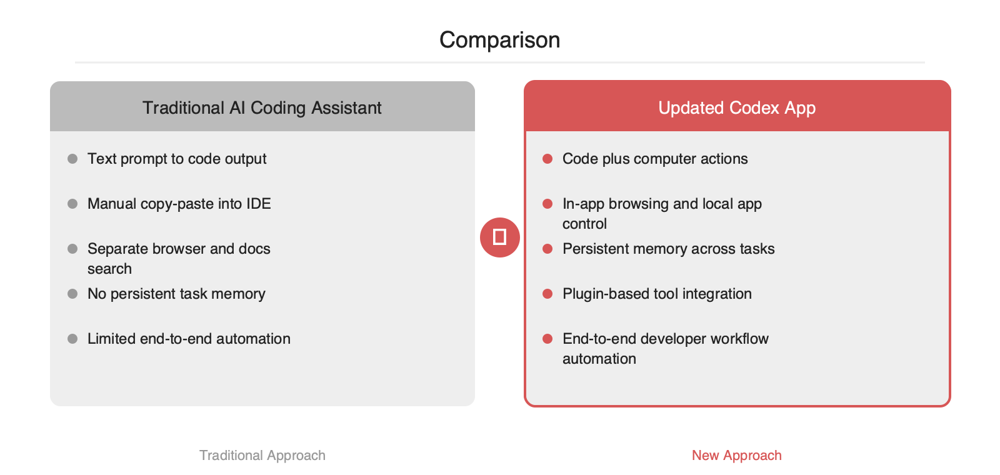

OpenAI가 macOS·Windows용 Codex 앱을 업데이트하며 컴퓨터 사용, 앱 내 브라우징, 이미지 생성, 메모리, 플러그인을 추가했습니다. 핵심은 코드 제안에 머물던 보조 도구를 실제 로컬 환경과 상호작용하는 에이전트로 확장한 점입니다. 개발자는 IDE, 브라우저, 문서, 터미널, 디자인 자산을 오가며 복붙하던 흐름을 하나의 작업 컨텍스트로 묶을 수 있게 됩니다. Why now는 명확합니다. LLM의 코드 생성 성능만으로는 end-to-end 개발 자동화가 막혔고, 병목은 모델이 아니라 운영체제와 앱을 다루는 실행 계층이었기 때문입니다.
OpenAI가 Codex 앱을 단순 코드 생성 인터페이스에서 데스크톱 작업 에이전트로 확장했습니다. 이번 업데이트의 포인트는 다섯 가지입니다.
훅은 분명합니다. 코드 생성 도구를 넘어 실제 개발 환경을 조작하는 Codex의 워크스테이션화입니다.
기존 AI 코딩 도구의 기본 패턴은 대체로 동일했습니다. 사용자가 프롬프트를 입력하면 모델이 코드 조각이나 패치 제안을 반환하고, 개발자가 이를 IDE·터미널·브라우저에 수동 반영하는 구조입니다. 이 방식은 다음 단계에서 자주 끊깁니다.
1. 문서 페이지를 열어 API 스펙을 확인합니다.
2. 저장소 구조를 탐색합니다.
3. 코드를 수정합니다.
4. 로컬에서 실행하고 에러를 확인합니다.
5. 스크린샷이나 디자인 자산을 별도 도구에서 만듭니다.
6. 반복 규칙을 다음 작업에서 다시 설명합니다.
문제는 모델의 코드 품질만이 아닙니다. 실행 컨텍스트가 분리되어 있다는 점입니다. 모델은 코드를 쓰지만, 실제 작업은 운영체제 이벤트, 브라우저 상태, 로컬 파일, 앱 UI, 팀 도구 연결 위에서 진행됩니다. 따라서 반자동 수준을 넘기 어렵고, 복붙과 컨텍스트 전환 비용이 누적됩니다.
이번 업데이트는 Codex를 text-in/text-out 인터페이스에서 action-capable agent로 이동시키는 방향으로 읽힙니다. 공개된 기능 설명 기준으로 보면 아키텍처는 다음과 같이 이해할 수 있습니다.
User intent
-> Codex planner
-> Context layer
- local files
- app/browser state
- memory
- plugins
-> Action layer
- computer use
- browse
- generate image
-> Result
- code changes
- artifacts
- task history
핵심은 세 계층입니다.

메모리와 앱 내 브라우징이 여기에 해당합니다. 사용자의 선호, 프로젝트 규칙, 직전 작업의 상태를 유지하면 매번 동일한 제약을 재입력할 필요가 줄어듭니다. 예를 들어 "Python은 uv 사용", "테스트는 pytest 우선", "프론트엔드는 shadcn/ui 기준" 같은 규칙을 반복 입력하지 않아도 되는 구조입니다.
computer use가 본체입니다. 모델이 답변만 생성하는 것이 아니라 앱과 UI를 대상으로 작업을 수행합니다. 엔지니어 관점에서는 브라우저 자동화, 파일 조작, 클릭·입력·탐색 같은 GUI 레벨 오퍼레이션이 추상화된 것으로 볼 수 있습니다. 이는 API가 없는 도구나 레거시 앱에도 적용 범위를 넓힐 수 있다는 의미입니다.
플러그인은 Codex를 폐쇄형 도구가 아니라 연결 가능한 작업 허브로 만듭니다. 이 계층이 있어야 이슈 트래커, 문서 시스템, CI/CD, 디자인 툴, 사내 API와 연결되는 실무 시나리오가 성립합니다.
실무에서는 다음과 같은 end-to-end 흐름이 가능해집니다.
# pseudo workflow
request = "OAuth callback 에러를 재현하고 수정한 뒤 PR 설명 초안을 작성합니다"
codex.plan(request)
codex.open_app("browser")
codex.browse("internal docs / oauth config")
codex.open_app("IDE")
codex.modify_files(["auth/callback.py", "tests/test_oauth.py"])
codex.run("pytest tests/test_oauth.py")
codex.capture_result()
codex.open_plugin("issue_tracker")
codex.post_update("Root cause, patch summary, test result")
중요한 점은 각 단계가 하나의 작업 맥락으로 연결된다는 점입니다. 기존에는 문서 검색 도구, 코딩 어시스턴트, 브라우저 자동화 스크립트, 이슈 업데이트 봇이 따로 놀았습니다. 이제는 하나의 에이전트가 계획-실행-기록을 잇는 형태로 수렴합니다.
코드 생성 자체는 이미 보편화 단계에 들어섰습니다. 다음 경쟁 축은 코드 품질 단독이 아니라 작업 완결성으로 이동하고 있습니다. 즉, "좋은 함수를 쓰는가"보다 "문제를 재현하고, 수정하고, 테스트하고, 결과를 남기는가"가 더 중요한 기준이 됩니다.
이번 Codex 업데이트는 그 이동을 반영합니다. 에이전트가 실제 컴퓨터와 앱을 다루고 작업 맥락을 기억하기 시작하면, 개발 도구는 채팅창이 아니라 운영체제 위의 실행 주체로 바뀝니다. AI 엔지니어와 백엔드 팀 입장에서는 단순 보조 도구 도입이 아니라, 로컬 개발 환경·사내 도구 체인·보안 정책을 포함한 새로운 자동화 계층을 설계하는 문제로 봐야 합니다.
결론적으로 이번 릴리스의 의미는 기능 추가 목록보다 큽니다. Codex는 코드 생성기에서 개발 워크스테이션으로 포지션을 넓히고 있으며, 이는 향후 IDE 통합, 테스트 자동화, 운영 툴 연계, 사내 지식 접근 방식까지 재설계하게 만들 가능성이 있습니다.